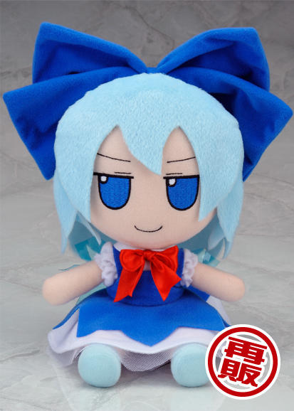

FumoFumo (ふもふも), mejor conocidos como
"Fumos", son una serie de peluches de "alta calidad"
fabricados y vendidos por la empresa japonesa Gift.
El nombre proviene de mofumofu (モフモフ), que
significa algo asi como "suavecito". Son
extremadamente caros para lo que vale un peluche y dificiles de
conseguir de primera mano. Hay Fumos de muchas franquicias, pero los
mas conocidos son los de
Touhou.

Fumos de Cirno, Remilia Scarlet y Hakurei Reimu, personajes de la
franquicia Touhou.
Me convenciste... como consigo un Fumo original y nuevo?
El precio varia segun el diseño y tamaño, pero
un Fumo original y nuevo va de los 40-50 dolares en
adelante.
Oficialmente se consiguen...
Viajando a Japon y comprandolos presencialmente en algun evento
donde participe la empresa Gift o Amiami, la cual tambien vende
oficialmente los productos de Gift (esto es carisimo! extremadamente
caro! no lo hagas a menos de que ya tengas planeado visitar Japon)
A traves del
sitio de Gift
(necesitas un proxy o un forwarder para comprar desde Japon, y el
envio puede tardar mucho tiempo)
A traves del sitio japones de Amiami (tambien necesitas un proxy o
un forwarder, y el envio tambien tarda)
Gift solo los fabrica dos veces al año y las
pre-ordenes se agotan en cuestion de minutos. En los
eventos presenciales
las filas son eternas (son horas y horas), y puede que esperes para
nada
porque el stock es muy limitado para la tremenda cantidad de gente que
acude alli. Asi que mi consejo es que (si no te queres amargar la
existencia) compres de segunda mano (obviamente te va a salir mas caro
y te pueden estafar), o te
conformes con una imitacion (suelen ser mas baratas y en
algunas casi no vas a notar la diferencia de calidad).